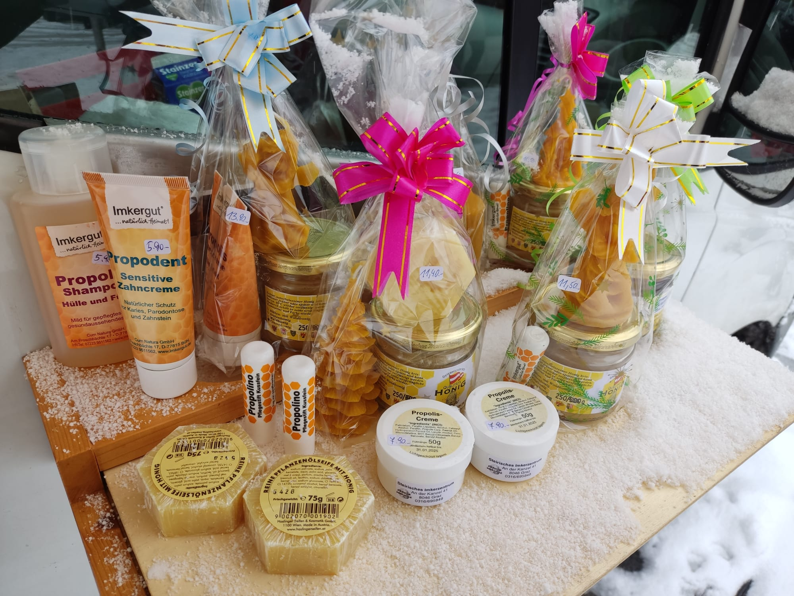
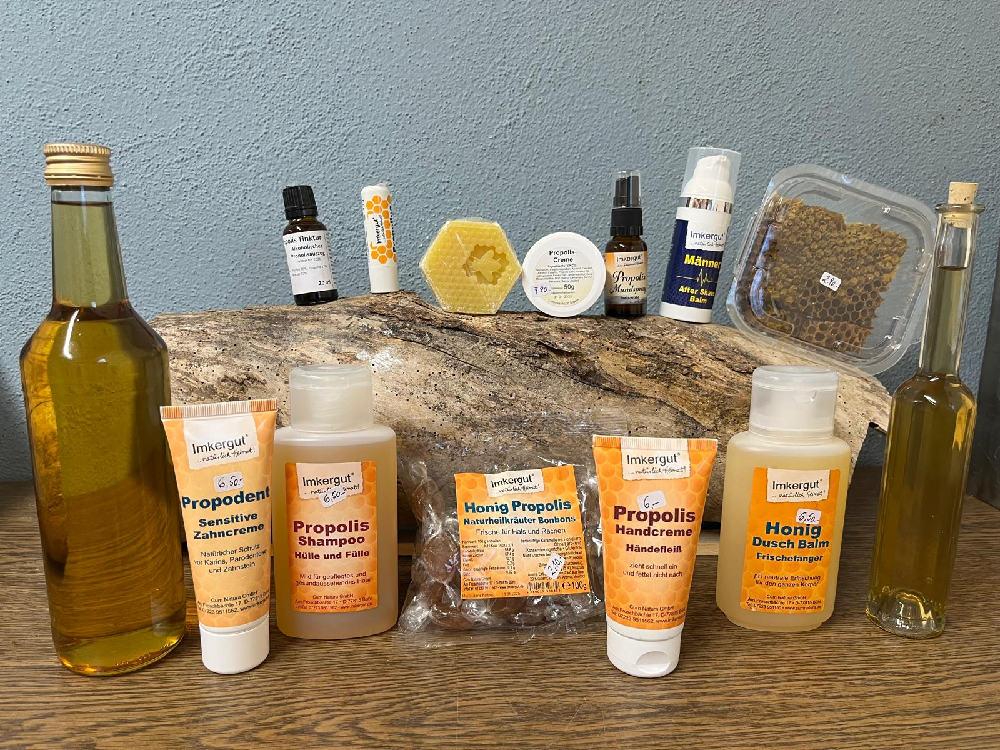
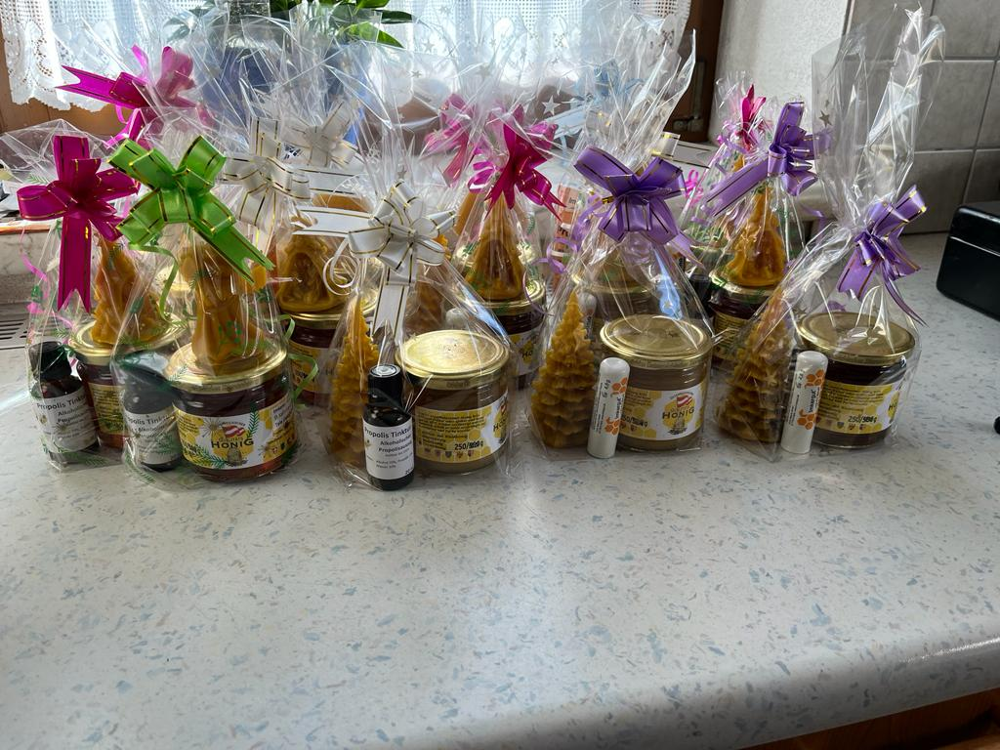
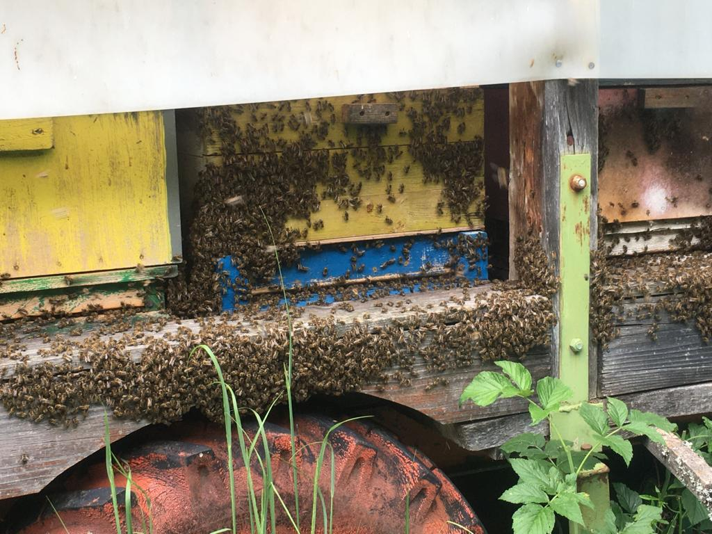
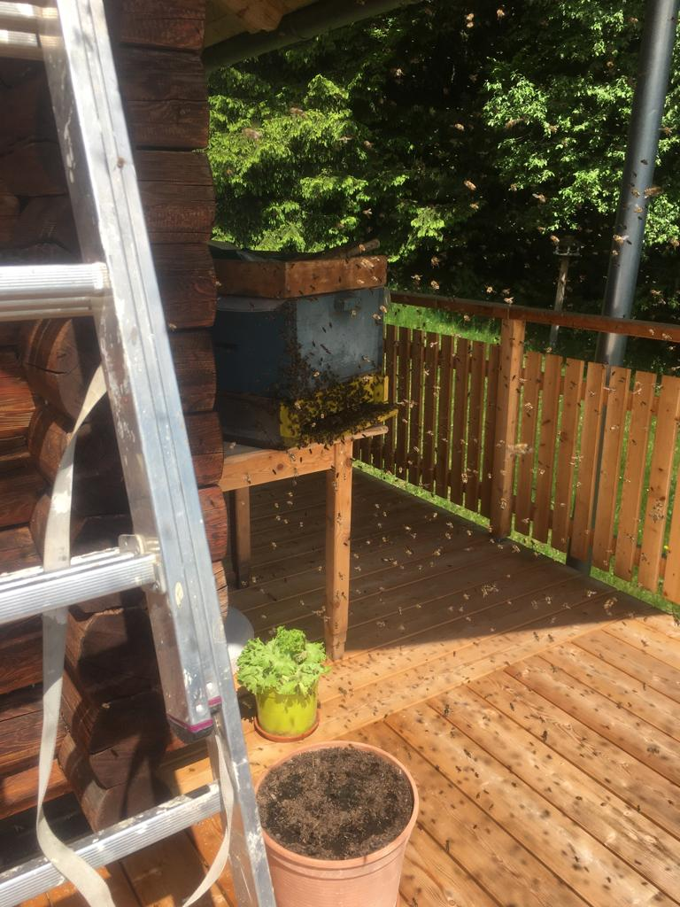
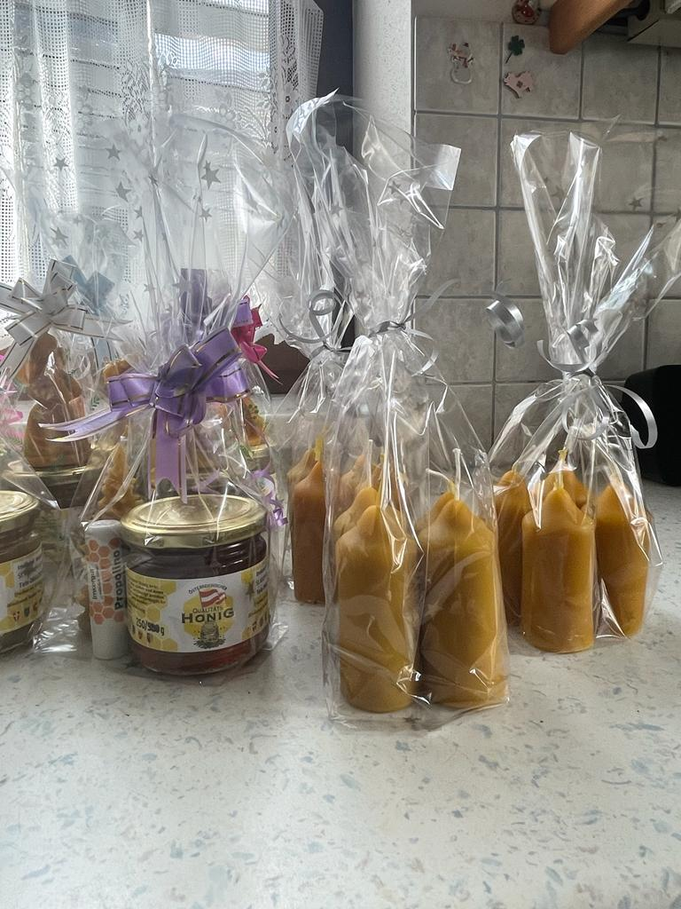
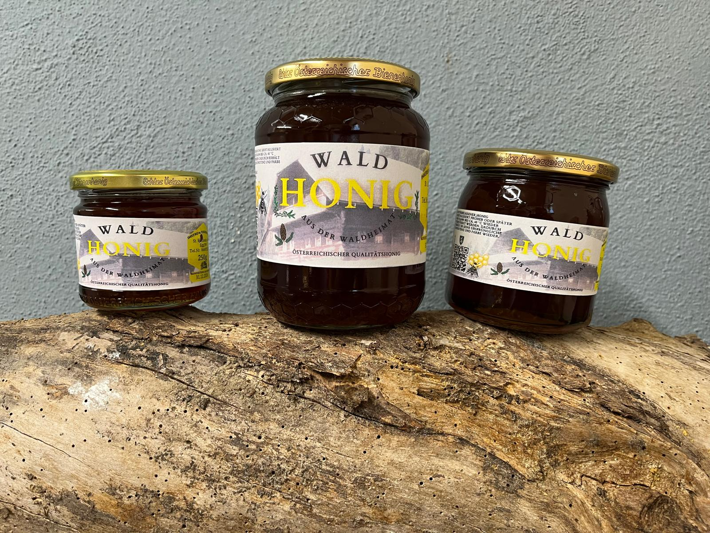

Bauernmarkt
Eine Auswahl unserer Produkte zur Weihnachtszeit.
Aus der steirischen Waldheimat
Unsere Bienen sammeln dort, wo Wälder, Wiesen und klare Bergluft zuhause sind. So entsteht naturbelassener Honig mit unverwechselbarem Geschmack.

Unsere Imkerei
Unsere Bienenstöcke stehen an ausgewählten Plätzen in der Waldheimat. Die abwechslungsreiche Landschaft schenkt den Völkern reichhaltige Tracht und unserem Honig seinen besonderen Charakter – von milden Blütennoten bis zum kräftigen Waldhonig.
Jedes Glas steht für sorgfältige Arbeit, kurze Wege und unsere Verbundenheit mit der Region.
Einblicke
Markttage, Erntezeit und das lebendige Treiben unserer Bienenvölker.

Eine Auswahl unserer Produkte zur Weihnachtszeit.

Liebevoll zusammengestellte Geschenke aus der Imkerei.

Hochbetrieb am Stock, wenn die Waldheimat blüht.

Ein Bienenschwarm zieht in sein neues Zuhause ein.

Natürlich duftende Kerzen für die ruhige Jahreszeit.

Kräftig, dunkel und typisch für unsere Heimat.
Lust auf Waldheimat im Glas?
Wir beraten Sie gerne persönlich zu unseren Honig- und Bienenprodukten.